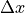
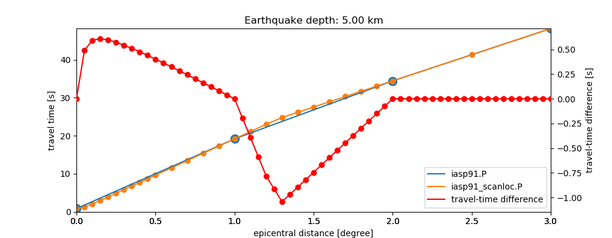

scanloc¶
Module for locating local earthquakes and man-made seismicity by DBSCAN clustersearch.
Description¶
Low-threshold monitoring¶
scanloc associates detected P and S phases from local and regional earthquakes and other seismic events for locating. It determines initial hypocenter solutions by cluster search based on DBSCAN 1 . Additional P and S phases are associated to existing internal solutions from cluster search or solutions incoming through the messaging system from external modules.
Due to the clustering and subsequent phase association scanloc facilitates low-threshold monitoring of high- and low-rate seismicity with high accuracy.

scolv Location tab with an automatic earthquake solution from scanloc based on P and S phases.¶
Teleseismic events¶
For teleseismic events scanloc can also be used to:
Associate more picks from P and S phases to external origins,
Suppress fake events due to detections from large earthquakes recorded by dense local networks at teleseismic distances. A dedicated section explains the setup and the requirements.
Travel-time tables¶
The scanloc package ships with densely sampled travel-time tables for LOCSAT 11 based on the IASP91 Earth model to enhance locating local earthquakes.
S phases¶
In order to deliver high-quality picks from S phases, the scanloc package also includes the saic plugin with the enhanced S-phase picker. The S-phase picker can be applied to detect S phases on the horizontal components or on the vertical component in case of 1-component sensors. In addition the scanloc package comes with the graphical debugger for the S-phase picker provided by the spickdbg plugin.
Auxiliary tools¶
The scanloc package also ships with auxiliary tools for real-time or non-real-time playbacks or tuning:
dump_picks: read picks and pick amplitudes from database and dump them to a file or to standard output
playback_picks: play back picks with amplitudes at normal or different speed and send them to the messaging system. playback_picks supports multiple pipelines.
For these tools, the usual options (-h, –debug, etc.) apply. See the Examples and playbacks section below for their applications.
Workflow¶
Buffering of picks and external origins,
Clustering of P picks:
cluster formation,
splitting of clusters in case of multiple P picks from the same station,
Association of P and S picks to clusters and event location,
Evaluation and sending of origins.

Simplified work flow of scanloc.¶
Pick and origin buffering¶
The entry point of scanloc is the addObject method which handles incoming objects from the messaging system. By default it is subscribed to the messaging group PICK and LOCATION. Depending on which object type (pick or origin) is incoming different working steps are proceeded.
In case a pick arrives, scanloc checks if this pick can be associated to one or more origins in the origin buffer exceeding a configurable
minScore.In case the pick can be associated, the scores for all new origins are calculated and the origin with the highest score is selected. scanloc internally associates origins to events and only if the score of the new origin exceeds the score of the last sent origin, the new origin is send out.
Picks and origins are buffered for configurable times as controlled by buffer.pickKeep
and buffer.originKeep. Adjust the parameters according to the times
these objects are required.
Clustering¶
In case the pick cannot be associated, the cluster search is started. The
cluster search is based on the algorithm DBSCAN 1 which takes the required number
of neighbours (clusterSearch.minSize)
and clusterSearch.maxSearchDist as configuration parameters.
The algorithm forms clusters of picks by searching for neighboring stations
that have picks. Internal origins are formed from clusters.
The number of origins from cluster search is limited by the configuration parameter
clusterSearch.maxOrigins.
The cluser search considers picks from stations by  with:
with:

where maxSearchDist is given by the configurable parameter clusterSearch.maxSearchDist.
is the vector sum of the time difference  between the picks in units of seconds and of a potential travel time
between the picks in units of seconds and of a potential travel time
 between the stations in units of seconds:
between the stations in units of seconds:

and

where  is the spatial distance between the stations in units of km and
 is the
is the clusterSearch.averageVelocity in units of km/s. Therefore
and clusterSearch.maxSearchDist take units of seconds.
As the cluster search is done over time and location, the additional configurable
velocity parameter, clusterSearch.averageVelocity, is required to transform
the input parameters of the cluster search in the same dimension (time).
The velocity should represent the average apparent horizontal P-wave velocity of
the crust.
Warning
When the number of buffered cluster origins reaches clusterSearch.maxOrigins,
no more new origins can be formed and warnings are issued. Adjust accordingly:
Limiting in time¶
Within one cluster, the difference in the pick times between the
cluster reference time and any other pick must not exceed clusterSearch.maxPickDelay.
Otherwise the pick is rejected from clustering. The parameter clusterSearch.maxPickDelay
has a big impact on the performance of the cluster search. Choosing the parameter
as small as possible will speed up scanloc and will reduce the complexity of the
cluster search.
The DBSCAN algorithm can deliver multiple pick clusters. The cluster search can
be disabled using clusterSearch.maxPickDelay:
# Maximum allowed difference between P pick and cluster reference time(latest pick time).
# The cluster search ignores all picks which exceed the value. Using "-1" enables all picks
# regardless of the delay. Unit: seconds.
clusterSearch.maxPickDelay = 0
Then, only external origins can be considered for phase association.
Limiting in space¶
The cluster search can be constraint to stations within a region given by the
coordinate of a central point and the radius around that point. The region constraint
is configured through clusterSearch.regionFilter. Applying this parameter
will disregard picks from stations outside the region for cluster search increasing
the speed and the complexity. Nevertheless, the excluded picks are available for
phase association.
For running the cluster search in several regions in parallel, different instances of scanloc taking picks from the same of different pickers can be created and started.
Cluster splitting¶
Clusters may contain P picks from the same stations. Therefore, the clusters are split
separating clusters with only one pick per stations. All new clusters are considered new
origins. By activating clusterSearch.checkOrigins, all new clusters are checked again
and clusters not meeting the configured cluster criteria are removed from the buffer.
The check imposes an additional overhead on the cluster search but it typically
lowers the chance for fake solutions and it also lowers the load on the
phase association.
Tuning and optimization¶
Use the option cluster-search-log-file to store detailed information
on the clustering process in a file, e.g. cluster.log. The given values can be
used to optimize the cluster search parameters.
scanloc --ep picks.xml -d type://host/database --cluster-search-log-file cluster.log > origins.xml
For optimizing the configuration of the parameter clusterSearch.maxPickDelay use the
default value first:
clusterSearch.maxPickDelay = -1
The given output file contains the clusters with the pick details. After each cluster the maximum time interval between the first and the last pick in the cluster is provided. A summary at the end of the file shows the largest value, e.g.:
+ cluster source: -69.6279, -21.4715, 1231891115.191
+ pick ID: *20090113.235827.36-AIC-CX.PB01..HHZ X: -69.4874 Y: -21.0432 time: 1231891107.368 distance: 14.715 s
+ pick ID: 20090113.235832.91-AIC-CX.PB02..HHZ X: -69.8960 Y: -21.3197 time: 1231891112.918 distance: 8.443 s
+ pick ID: 20090113.235839.53-AIC-CX.PB07..HHZ X: -69.8862 Y: -21.7267 time: 1231891119.538 distance: 10.677 s
+ pick ID: 20090113.235840.94-AIC-CX.PB09..HHZ X: -69.2419 Y: -21.7964 time: 1231891120.940 distance: 14.645 s
+ 1 split cluster
+ cluster
+ 20090113.235827.36-AIC-CX.PB01..HHZ
+ 20090113.235832.91-AIC-CX.PB02..HHZ
+ 20090113.235839.53-AIC-CX.PB07..HHZ
+ 20090113.235840.94-AIC-CX.PB09..HHZ
+ maximum pick time interval for this cluster: 13.572 s
+ end
+ end
+ end
+ end
+ summary:
+ maxPickDelay: maximum experienced value: 40.840 s
The summary value can be used as a lower proxy to set clusterSearch.maxPickDelay.
Locating¶
Clusters are located by the configured locator. If the
location fails, the origin is ignored unless clusterSearch.preliminary
is active.
Phase Association¶
When a cluster of P picks meeting association.minPhase is found
or an external origins arrives, scanloc associates additional picks
from P and S waves which are buffered.
The new set of picks are used for relocating.
In case the buffered pick is a P pick the algorithm
directly attempts to associate the pick solely based on the residual. It tries to relocate
the solution after each successful association. P picks with travel-time
residuals larger than association.maxResidual are rejected.
After the P-picks are associated and relocated, scanloc tries to associate the
S picks. This association is not based
on the residual but on the P pick referenced by the S pick. The S pick is
only associated in case the reference P pick is already associated to the
origin. Also after each S pick a relocation is done. In case the relocation
fails or the event residual is larger than maxRMS,
the S pick is associated with a weight of 0. The score of the resulting
origin is compared with scores of origins belonging to the same event. In case
the score is higher than the rest of the origins, the origin is send out.
In addition to origins from the cluster search, scanloc can also treat external origins that are created by other associators, e.g. scautoloc 7. In case an such origin is received scanloc tries to associate all picks in the buffer to the origin. The association and the following processes are the same as described above. See figure Simplified work flow of scanloc. for an overview.
Only picks from stations within a configured time window and a maximum epicentral
distance range are considered. The time windows are computed from the predicted
arrival times of P and S waves and the margins given by association.maxPResidual
and association.maxPResidual, respectively.
The maximum expicentral distance is configured for all stations by
association.maxDist. However, this parameter can be overruled per
network and station by providing a station table in a file. The file name is configured by
association.stationConfig. As in scautoloc each line of the table
consists of the network code, the station code, a switch and the maximum epicentral
distance in degrees. Wildcards can be used for the network and the station code.
The switch causes the associator to consider (=1) or to ignore (=0) a network or a station.
The last occurrence of an item in a table overrules previous ones, e.g.
* * 1 180
GR * 1 60
GR GRA1 1 20
Z3 * 0 180
For associating the picks, travel times from look-up tables are used. The
association.tableType and the association.table can be
configured to provide specific tables which may be more appropriate for specific
regions. Currently, only travel-time tables of association.tableType from
LOCSAT 11 and libtau are supported. scanloc provides
densely-sampled travel-time tables for LOCSAT.
Travel times from other sources can be considered by a plugin exposing the travel times to the travel-time interface. The considered table must provide the time for all considered phases.
Example configuration (scanloc.cfg):
# Type of travel-time tables for phase association. May be different from locator.
# Use e.g. libtau or LOCSAT.
association.tableType = LOCSAT
# Name of travel-time table used for phase association. May be different from locator
# profile.
association.table = iasp91_scanloc
location of |
|
|---|---|
libtau |
@DATADIR@/ttt |
LOCSAT |
@DATADIR@/locsat/tables |
Note
Travel-time tables used during association and location may be different.
Therefore the travel-time residuals visible after relocating may be different
from the travel-time residuals considered during association.
The differences must be considered when configuring association.maxPResidual
and association.maxSResidual.
In order to make the alternative locator available to scanloc, the respective plugin must be loaded. The list of available locators can be provided by scanloc:
seiscomp exec scanloc --locator-list
Note: Computational speed can be an issue when alternative locators are used and when many picks are to be tested during association. In this case scanloc can be configured with LocSAT 11 but screloc 9 may be used along with the preferred locator and profile to relocate the origin. The locator NonLinLoc 13 is certainly too slow for being used in scanloc but is a good option for screloc.
Sending of origins¶
Before sending a new internal origin to the messaging or to XML output (–ep) it is tested against the configuration:
Picks are removed when their travel-time residual >
association.maxResidualand origins are relocated,Origins are skipped when the score <
minScore,Origins are skipped when the depth >
ignoreDepth.
The remaining internal origins are evaluated based on scoring.
The best origin of the same internal event is the one
which has the highest score at the time of availability. When meeting the parameters
ignoreDepth, maxRMS and minScore it is sent to the
SeisComP messaging or to stdout in case of XML playbacks (–ep).
The sending of origins may be delayed allowing to find new origins with higher score.
The delay reduces the amount of origins in the SeisComP system and the load of other modules.
It is controlled by the publication.* configuration parameters.
Note
In XML-based playbacks, the publication.* configuration parameters
are ignored and all origins are provided.
Internal origins and events¶
scanloc forms
Internal origins from the locations and the associated picks (arrivals) of new arrival sets,
Internal events are formed from the remaining origins based on the
eventAssociation.*parameters.
Locating¶
scanloc locates internal origins based on the configuration by the locator.* parameters.
Consider a fast locator (locator.type), e.g. LOCSAT 11 or Hypo71 12 and
appropriate travel-time tables locator.profile,
e.g. the provided dense travel-time tables.
If the location fails and locator.fixDepth is active, the location depth is
fixed to defaultDepth and the origin is relocated.
Example configuration (scanloc.cfg):
# The locator type to use
locator.type = LOCSAT
# The locator profile to use
locator.profile = iasp91_scanloc
Scoring¶
Each internal origin is evaluated by calculating a  .
The is calculated as a weighted sum from the number of associated
P and S picks (pCount and pCount), of loosely associated P and S picks
(p0Count and s0Count) which are not used for locating, depth (depthFactor) and residual (residualFactor):
.
The is calculated as a weighted sum from the number of associated
P and S picks (pCount and pCount), of loosely associated P and S picks
(p0Count and s0Count) which are not used for locating, depth (depthFactor) and residual (residualFactor):

The weight factors score.weights.p , score.weights.p0 ,
score.weights.s , score.weights.s0
score.weights.depth and score.weights.residual
can be configured.
The values for depthFactor and residualFactor are derived from considered
depth and residual and the configured values for
ignoreDepth and association.maxResidual.
Heigher depth weight is given to origins with shallower depth. To from the score independent
of depth, adjust score.weights.depth:
score.weights.depth = 0
Association of teleseismic phases¶
Dense local networks used to monitor local seismicity are often able to catch also a significant number of phases from earthquakes at teleseismic distances. Such phases include Pdiff or PKP. Especially PKP may contain a significant amount of energy at higher frequencies. Therefore PKP is often detected by networks that are tuned to detect local earthquakes. Due to the steep incidence and the low horizontal slowness of these phases, they are sometimes located as fake deep earthquakes below the network. scanloc can be used to suppress this type of fake events.
In a 2-pipeline setup, scanloc can associcate such teleseismic phases recorded by the local network with origins that were found by the pipeline for monitoring teleseismic earthquakes. Then scevent 4 will associate the origins from the teleseismic pipeline with the fake origins from the pipeline for local monitoring to the same event. The assumption is that the origins from the teleseismic pipeline win over the origins from pipeline for local monitoring because they have more associated arrivals. In this case the origins from pipeline for teleseismic monitoring that has most phases becomes the preferred origin for the event. This scanloc feature requires an extended license.
Setup of a 2-pipeline system
Generate a 2-pipeline system involving at least scautopick 8, scanloc and scevent 4:
Pipeline 1 monitors teleseismic earthquakes using scautopick, scautoloc, scanloc and default message groups.
Pipeline 2 monitors local earthquakes using l1autopick, l1autoloc and l1scanloc using the message groups L1PICK and L1LOCATION.
Let scanloc not perform cluster search (
clusterSearch.maxOrigins= 0) but allow scanloc to only associate P picks from pipelines 2 based on origins from scautoloc (connection.subscriptions = “LOCATION, L1PICK” in the global module parameters). Configure scanloc to associate the picks from pipeline 2 as picks with zero weight when they are, e.g., in the PKP or Pdiff distance range. Use one zeroWeight profiles per phase.In order to facilitate association of teleseismic picks, the picks and the origins must be kept in memory for sufficient time. Increase
buffer.pickKeepandbuffer.originKeepaccordingly, e.g. to 1800 s.In this way zero-weight picks will not be used for locating the event but are part of the origin and can be considered by scevent.
Configure scevent to listen to the message groups from both pipelines (e.g. LOCATION and L1LOCATION) and activate the scevent module parameter eventAssociation.allowLooseAssociatedArrivals (scevent.cfg).

Parameter exchange in a 2-pipeline system. The messaging system, responsible for the parameter exchange, is representated by the circles, indicating the message groups. Teleseismic monitoring is configured with scautopick, scanloc, scautoloc and local monitoring with l1autopick, l1scanloc, l1autoloc.¶
Playback using picks and amplitudes from 2-pipeline system (real-event examples)

Location tab in scolv with zero-weight picks associated by scanloc as PKP phases.¶

Event tab in scolv showing the origins from the pipelines for local and teleseseismic monitoring. The preferred origin located near the Solomon Islands is shown in bold on top. Fake origins in Europe located by pipeline for local monitoring based on PKP phases falsely considerded P phases are associated to the event but do not form the preferred origin at any time.¶
Dense travel-time tables¶
The default travel time tables of SeisComP for LOCSAT 11 provide the times in intervals of 1 degree epicentral distance. Thus the curvature of the travel-time curve at closer distance is not well imaged potentially resulting in wrong locations or missing event solutions. Therefore, the LOCSAT tables, iasp91_scanloc.*, based on the IASP91 model with higher spacial sampling are added. The tables are located in $SEISCOMP_ROOT/share/locsat/tabels.

{kind=link}
Differences between P-wave travel times in the standard iasp91 tables for LOCSAT and the ias91_scanloc tables provided with scanloc for an event at 5 km depth.¶
Configuration¶
Configure association.table and locator.profile with
iasp91_scanloc for making use of the provided LOCSAT tables.
# Type of travel-time tables for phase association. May be different from locator.
# Use e.g. libtau or LOCSAT.
association.tableType = LOCSAT
# Name of travel-time table used for phase association. May be different from locator
# profile.
association.table = iasp91_scanloc
# The locator type to use
locator.type = LOCSAT
# The locator profile to use
locator.profile = iasp91_scanloc
S-phase detector¶
The scanloc modul provides the enhanced S phase detectors, S-AIC and S-AIC-V, as well as the debugger.
Overview¶
The scanloc package includes two S phase pickers: S-AIC and S-AIC-V, enhancing the performance of the picker with respect to the OpenSource S-L2. Both picker apply an AIC algorithm in order to detect S phases after a P pick was maked. Therefore S phases are only detected after a P detection. Using the S-AIC, S picks are determined on the vectorial sum of the horizontal componentes (L2 trace). The S-AIC-V works like the S-AIC but it picks S phases on the vertical component.
The performance of the pickers have been tested by comparison of automatic with manual picks (see the Figure showing the comparison).

Performance comparison showing the differences in pick time from manual picks and the optimally tuned pickers S-L2, S-AIC and S-AIC-V for local earthquakes in West-Bohemia/Vogtland. The area is typical of local earthquake monitored at short epicentral distances of a few tens of kilometers. The distribution of the differences in the automatic pick times with respect to the manual ones shows the increased performance using the S-AIC.¶
Configuration¶
Add the plugin saic to the configuration of scautopick 8 or the global module configuration for making use of the S-AIC or the S-AIC-V:
plugins = ${plugins},saic
Activate one of the S-phase ickers (S-L2, S-AIC, S-AIC-V) by changing the name of the S picker in the module configuration of scautopick 8. Deactivating killPendingSPickers will allow to pick S phases even if more P phases were detected before:
spicker = "S-AIC" killPendingSPickers = false
Configure the S-picker parameters under spicker in global section of the bindings of scautopick 8. E.g. for S-AIC in local earthquake monitoring (all values must be adjusted to the actual data):
detecFilter = "RMHP(10)>>ITAPER(30)>>BW(4,4,20)>>STALTA(0.2,20)" timeCorr = 0 spicker.AIC.noiseBegin = -10 spicker.AIC.signalBegin = 0.5 spicker.AIC.filter = "ITAPER(4)>>BW_HP(4,3)" spicker.AIC.detecFilter = "" spicker.AIC.step = 0.5 spicker.AIC.minSNR = 5 spicker.AIC.minCnt = 5
The AIC parameters spicker.AIC. are used for S-AIC and for S-AIC-V. The parameters of the S-phase pickers can be configured in the gloabel section of the bindings profile of scautopick 8. The meaning of some parameters are shared between the S-phase pickers:
Parameter
Picker type
Description
noiseBeginS-AIC, S-AIC-V, S-L2
Data window added before the p pick on order to compensate for effects due to the data processing, filtering and to compute the SNR.
signalBeginS-AIC, S-AIC-V, S-L2
Start of the data processing relative to the reference P pick.
signalEndS-AIC, S-AIC-V, S-L2
End of the data processing relative to the reference P pick.
filterS-AIC, S-L2
Filter applied before forming the L2 trace.
detectFilterS-AIC, S-AIC-V, S-L2
Filter applied on the L2 trace before AIC analysis.
stepS-AIC, S-AIC-V
Step size in which the time windows are enlarged.
minSNRS-AIC, S-AIC-V, S-L2
Minimum SNR in order to accept a pick.
minCntS-AIC, S-AIC-V
Minimum number the AIC minimum must be found for subsequent time windows.
uncertaintyS-AIC, S-AIC-V
Pick uncertainty. Unused by the picker but part of the output pick element.
S-Picker Debugger¶
The debugger GUI allows the graphics-assisted tuning of the S pickers, S-L2, S-AIC, S-AIC-V. In order to make use of the S picker debugging GUI
Configure the initial parameters in the global bindings of the considered stream.
The debugger GUI can be started from the picker window of scolv 10. If there is an existing P pick the debugger window can be opened with a right click on the P pick. In the dropdown menu the S picker type can be chosen. A new pop-up window opens where the P pick (red line) and the newly determined S pick (light blue line) are shown. The initial paramters can be changed to find the optimum values. They are defined in the global binding profile assigned to the considered stream. To test the changed settings click on the Update button. In order to make use of the tested parameters their values must be added to the bindings profile of scautopick 8.
The example shows the debugger GUI for a local earthquake in West Bohemia/Vogtland. The red line represents the time of the reference P pick. The light blue line shows the final S pick (the number indicates the SNR).

S-picker debugger example showing the filtered horizontal traces and the resulting L2 trace.¶
Other shown values are:
Parameter |
Description |
|---|---|
Pick |
Pick time based on current parameter values. |
AIC0 |
Start of the data processing relative to the reference P pick. |
AIC |
S pick based on the considered parameters with number indicating the SNR. |
AIC1 |
End of the data processing when meeting MinSNR and MinCnt. |
Examples and playbacks¶
Run scanloc during real-time processing:
seiscomp start scanloc
Run scanloc on the command line for playbacks and debugging output:
seiscomp exec scanloc --debugRead the phase picks from the database and store them in picks.xml for later playback:
dump_picks -r -90,-180,90,180 -d type://host/database -t "2015-08-17 08:03:00.00~2015-08-17 08:04:00.00" -o picks.xmlPlayback of picks stored in XML format at normal speed (with seiscomp messaging), start scanloc separately for debug messages on the command line:
seiscomp start spread scmaster scamp scmag scevent seiscomp exec scanloc --debug playback_picks picks.xml --speed 1
Playback of picks with amplitudes originating from different pipelines at normal speed (with SeisComP messaging). Picks and amplitudes in XML format are sent to the separated message groups PICK, AMPLITUDE and L1PICK. scanloc and l1scanloc listen to picks from PICK and L1PICKS, respectively. scautoloc 7 additionally needs the pick amplitudes from the subscribed amplitude groups.
Create the pick XML files including the pick amplitudes as in your 2-pipeline system. Then start all required modules and invoke playback_picks with –timing pickTime for sending the picks and amplitudes created by different pickers at different times. The objects are send in the timely order of the pick or creation times. E.g.:
scautopick --ep --playback -I file://your_file -d type://host/database > picks.xml l1autopick --ep --playback -I file://your_file -d type://host/database > l1picks.xml seiscomp start spread scmaster scamp scmag scevent scanloc l1scanloc scautoloc l1autoloc playback_picks picks.xml:PICK:AMPLITUDE l1picks.xml:L1PICK:AMPLITUDE --timing pickTime --speed 1Playback of picks stored in XML format to locate events and to determined the magnitude. Intermediate results are stored in XML files.
Events do not exist in the database, use scdb 2 to populate database. The messaging system is not running:
scautopick --ep --playback -I file://your_file -d type://host/database > picks.xml scanloc --ep picks.xml -d type://host/database > origins.xml scamp --ep origins.xml -d type://host/database file://your_file > amps.xml scmag --ep amps.xml -d type://host/database > mags.xml scevent --ep mags.xml -d type://host/database > events.xml scdb -i events.xml -d type://host/database
Events may exist in the database and shall be updated with new origins new events based on new origins shall be added. Run the messaging system and all modules that shall process the new parameters of the origin, e.g. scamp 5 , scmag 6 , scevent 4. Use scdispatch 3 to send the new objects to the messaging system.
scanloc --ep picks.xml -d type://host/database > origins.xml seiscomp start spread scmaster scamp scmag scevent scdispatch -H host -O update -i origins.xml
Instead of the origins, other parameters created by the proceedures in (1.) may be distpatched.
Playback of picks stored in XML format, without a database.
Initial step: store the station inventory and the configuration from a database once in a XML file.
scxmldump -fI -o inventory.xml -d type://host/database scxmldump -fC -o config.xml -d type://host/database
Continue with the examples above replacing the database parameter “-d type://host/database” with “–inventory-db inventory.xml –config-db config.xml”.
References¶
scanloc has been demonstrated, promoted and discussed with scientists and the SeisComP community in scientific publications and at international science conferences, e.g.:
F. Grigoli, L. Scarabello, M. Boese, B. Weber, S. Wiemer, J. F. Clinton: Pick- and waveform-based techniques for real-time detection of induced seismicity, 2018, Geophys. J. Int., 213:2, doi: 0.1093/gji/ggy019.
J. Clinton, F. Grigoli, T. Diehl, T. Kraft, L. Scarabello, M. Hermann, P. Kaestli, M. Boese, S. Wiemer: Advanced Real-time Monitoring for Natural and Induced seismic sequences, 2018, Geophyscial Research Abracts, EGU General Assembly, Vol. 20, abstract: EGU2018-9480-2.
F. Grigoli, M. Boese, L. Scarabello, T. Diehl, B. Weber, S. Wiemer, J. F. Clinton: Picking vs Waveform based detection and location methods for induced seismicity monitoring, 2018, JpGU2018, Japan, abstract: SSS03-05.
F. Grigoli, M. Boese, L. Scarabello, T. Diehl, B. Weber, S. Wiemer, J. F. Clinton: Picking vs Waveform based detection and location methods for induced seismicity monitoring, 2017, Geophyscial Research Abracts, EGU General Assembly, Vol. 19, abstract: EGU2017-10562.
D. Roessler, J. Becker, E. Ellguth, R. Henneberger, S. Herrnkind, B. Weber: Cluster-search based monitoring of local earthquakes in SeisComP3, 2016, AG Seismology - 42. meeting, Bad Salzschlirf, Germany
D. Roessler, E. Ellguth, S. Herrnkind, B. Weber, R. Henneberger, H. Blanck: Cluster-search based monitoring of local earthquakes in SeisComP3, 2016, AGU Fall Meeting, San Francisco, USA, abstract S31E-06.
- 1(1,2)
- 2
- 3
https://docs.gempa.de/seiscomp/4/current/apps/scdispatch.html
- 4(1,2,3)
- 5
- 6
- 7(1,2)
https://docs.gempa.de/seiscomp/4/current/apps/scautoloc.html
- 8(1,2,3,4,5,6)
https://docs.gempa.de/seiscomp/4/current/apps/scautopick.html
- 9
- 10(1,2)
- 11(1,2,3,4,5)
https://docs.gempa.de/seiscomp/4/current/apps/global_locsat.html
- 12
https://docs.gempa.de/seiscomp/4/current/apps/global_hypo71.html
- 13
https://docs.gempa.de/seiscomp/4/current/apps/global_nonlinloc.html
Configuration¶
etc/defaults/global.cfgetc/defaults/scanloc.cfgetc/global.cfgetc/scanloc.cfg~/.seiscomp/global.cfg~/.seiscomp/scanloc.cfgscanloc inherits global options.
-
ignoreOrigins¶ Type: boolean
Origins received from messaging will be ignored.
Default: Accept external origins from messaging and associate more phases. Default is
false.
-
defaultDepth¶ Type: float
Unit: km
Default used for locating. Default is
5.0.
-
ignoreDepth¶ Type: float
Unit: km
Depths larger than ignoreDepth will be ignored. Default is
650.0.
-
maxRMS¶ Type: float
Unit: s
Maximum allowed overall residual. Default is
1.5.
-
minScore¶ Type: float
Score to be reached to send origin. Default is
0.0.
-
buffer.pickKeep¶ Type: float
Unit: s
Time to keep picks in the internal buffer. Time comparison is based on the pick times. In non-real time playbacks the time to keep picks is usually compressed. Default is
180.0.
-
buffer.originKeep¶ Type: float
Unit: s
Time to keep origins in the internal buffer. Time comparison is based on the origin times. In non-real time playbacks the time to keep orgins is usually compressed. Default is
180.0.
Note
clusterSearch.* Parameters controlling the cluster search based on P phase picks.
-
clusterSearch.maxPickDelay¶ Type: float
Unit: s
Maximum allowed difference between P picks and cluster reference time (latest pick time). Optimum values can be derived from travel times.The cluster search ignores all picks which exceed the value. Using “-1” enables all picks regardless of the delay. Default is
-1.0.
-
clusterSearch.minSize¶ Type: int
Minimum number of core points (P picks) to form a cluster. Default is
4.
-
clusterSearch.averageVelocity¶ Type: float
Unit: km/s
Average velocity used for distance calculation. Default is
4.0.
-
clusterSearch.maxSearchDist¶ Type: float
Unit: s
Maximum allowed distance over all core points and maximum allowed distance for neighborhood search. Both account for traveltime difference, inter-station distance and the configured averageVelocity. Default is
60.
-
clusterSearch.maxOrigins¶ Type: uint
Maximum allowed origins derived from cluster search. Set this option to zero to disable the cluster search completly. Default is
128.
-
clusterSearch.preliminary¶ Type: boolean
Send origins based on cluster search as preliminary origins if the location fails. Otherwise those origins are ignored. Consider activating “checkOrigins”. Default is
false.
-
clusterSearch.checkOrigins¶ Type: boolean
Check, if derived origins fulfill the cluster search criteria anymore. Activating this option may lower the number of events and suppress fake events. Default is
false.
-
clusterSearch.ignorePicks¶ Type: float
Unit: s
By default the algorithm creates a new arrival set when there is already a pick with the same stream id assigned. Use this option to ignore surrounding picks. Default is
0.0.
-
clusterSearch.regionFilter¶ Type: list:double
Cluster only picks which sensor locations are inside the defined region. The region is defined by latitude, longitude and a radius in km. By default the region filter is disabled.
Note
association.* Parameters controlling the association of P and S phases to cluster origins or external origins.
-
association.minPhase¶ Type: int
Number picks in cluster origin to be reached for starting to associate more P nd S picks. Default is
4.
-
association.maxDist¶ Type: float
Unit: km
Maximum epicentral distance to associate P and S picks. Default is
1000.0.
-
association.stationConfig¶ Type: path
The station configuration file contains lines consisting of network code, station code, weight (0 or 1) and maximum association distance given in degree. The maximum association distance is the distance in degrees from the origin up to which this station may contribute to a new origin. This parameter overrides the global parameter association.maxDist. If this distance is 180 deg, this station may contribute to new origins world-wide. However, if the distance is only 10 degree, the range of this station is limited. This is a helpful setting in case of mediocre stations in a region where there are numerous good and reliable stations nearby. The station will then not pose a risk for locations generated outside the maximum association distance. The last item found in the list overrules previous ones. Network and station codes may be wildcards (*) for convenience. E.g.:
* * 1 10
GE * 1 180
-
association.maxPResidual¶ Type: float
Unit: s
Maximum allowed difference between measured and predicted arrival times for associating P phases to origin. Larger values allow significant correction of initial locations. Default is
4.0.
-
association.maxSResidual¶ Type: float
Unit: s
Maximum allowed difference between measured and predicted arrival time for associating S phases to origins. Larger values allow significant correction of initial locations. Default is
4.0.
-
association.maxResidual¶ Type: float
Unit: s
Maximum allowed time residuals of picks after association and relocation. Picks will be removed at exceedance. Default is
2.0.
-
association.tableType¶ Type: string
Type of traveltime tables for phase association. May be different from locator. Use e.g. libtau or LOCSAT. Default is
LOCSAT.
-
association.table¶ Type: string
Name of traveltime table used for phase association. May be different from locator profile. Using a different table/profile may result in increased runtime. Default is
iasp91.
-
association.zeroWeightProfiles¶ Type: list:string
zeroWeight-profile name for associating the configured phases with zero weight to origins. Multiples profile names may be set separated by comma. The order of names determines order of checked phases. Each profile can have different parameters.
Note
association.zeroWeight.* zeroWeight profiles containing the parameters for associating phases with zero weight to origins.
Note
association.zeroWeight.$name.*
$name is a placeholder for the name to be used and needs to be added to zeroWeight.profiles to become active.
zeroWeight.profiles = a,b
association.zeroWeight.a.value1 = ...
association.zeroWeight.b.value1 = ...
# c is not active because it has not been added
# to the list of zeroWeight.profiles
association.zeroWeight.c.value1 = ...
-
association.zeroWeight.$name.phaseType¶ Type: String
One phase type to be associated with zero weight. Examples: PKP or Pdiff.
-
association.zeroWeight.$name.minDistance¶ Type: float
Unit: degree
Minimum epicentral distance. Default is
120.0.
-
association.zeroWeight.$name.maxResidual¶ Type: float
Unit: s
Maximum time residual of the associated phase. Default is
5.0.
Note
eventAssociation.* Parameters controlling the association of interal scanloc origins to internal scanloc events.
-
eventAssociation.compareAllArrivalTimes¶ Type: boolean
This parameter is only used in conjunction with eventAssociation.maximumMatchingArrivalTimeDiff. If a station has multiple associated arrivals for a particular event, this flag defines if the time distance of a new pick to all arrivals must be within eventAssociation.maximumMatchingArrivalTimeDiff or if one matching arrival is enough. Default is
false.
-
eventAssociation.minMatchingArrivals¶ Type: int
Minimum number of matching picks between two origins to be associated to the same event. Default is
3.
-
eventAssociation.maxMatchingArrivalTimeDiff¶ Type: float
Unit: s
If this time window in seconds is negative, pickIDs are compared to find matching arrivals. A non negative value (including 0) compares pick times regardless of the pickID. Pass: |pick1.time - pick2.time| <= threshold Default is
-1.
-
eventAssociation.maxDist¶ Type: double
Unit: km
Allowed location difference between an incoming origin compared with preferred origins to get associated. Default is
500.0.
-
eventAssociation.maxTimeSpan¶ Type: double
Unit: s
Associates an origin with an existing event if the origin time differs not more than 60 seconds unless the minimumMatchingArrivals criteria matches. Default is
60.0.
Note
locator.* Parameters controlling the locator for locate the scanloc origins.
-
locator.type¶ Type: string
The locator type to be used. Use e.g. LOCSAT or Hypo71. Default is
LOCSAT.
-
locator.profile¶ Type: string
The locator profile to be used. Using a different profile/table for locating and associating may result in increased runtime. Default is
iasp91.
-
locator.fixDepth¶ Type: boolean
If enabled the locator fixes the depth to the configured default value “defaultDepth” in case that all previous attempts to relocate fail. This option may result in many more origins. It prevents “ignoreDepth” from beeing effective if “defaultDepth” < “ignoreDepth”. Default is
false.
Note
score.* Formula to calculate the internal origin score. Configurable are the weighting factors for the following components: used P-phase (score.weights.p), unused P-phase (score.weights.p0), used S-phase (score.weights.s), unused S-phase (score.weights.0), depth (score.weights.depth) and residual (score.weights.residual).
-
score.weights.p¶ Type: float
Defines the weight of p arrivals for scoring Default is
1.0.
-
score.weights.p0¶ Type: float
Defines the weight of p arrivals with a weight of zero for scoring Default is
0.5.
-
score.weights.s¶ Type: float
Defines the weight of s arrivals for scoring Default is
2.0.
-
score.weights.s0¶ Type: float
Defines the weight of s arrivals with a weight of zero for scoring Default is
0.5.
-
score.weights.depth¶ Type: float
Defines the weight of the depth for scoring Default is
1.0.
-
score.weights.residual¶ Type: float
Defines the weight of the residual for scoring Default is
1.0.
-
score.weights.increaseManual¶ Type: boolean
Increase the weight for manual picks by a factor of 1.001. This gives preference to manual picks in case automatic ones co-exist for the same station. Default is
false.
Note
publication.* Parameters controlling the publication of internal scanloc events as new origins to the messaging system.
-
publication.intervalTimeSlope¶ Type: double
Unit: s/count
Parameter “a” in the equation t = aN + b.
t: time interval between sending updates of an origin
N: arrival count of the origin
Increasing the value reduces the amount of sent origins. With the option –ep (playback mode) this value is set to 0. Default is
0.5.
-
publication.intervalTimeIntercept¶ Type: double
Unit: s
Parameter “b” in the equation t = aN + b.
t: time interval between sending updates of an origin
N: arrival count of the origin
Increasing the value reduces the amount of sent origins. With the option –ep (playback mode) this value is set to 0. Default is
0.0.
-
publication.wakeUpInterval¶ Type: int
Unit: s
Integer interval to check the origin buffer for sending origins if no other origins have been created.
Reducing the value may be required in EEW: it increases the load on scanloc but allows to send origins more rapidly. Default is
5.